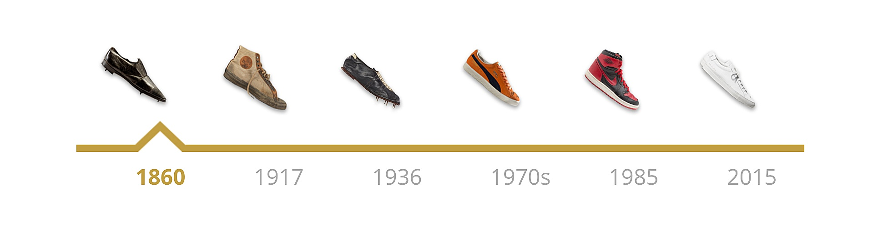

Sneakers (also called trainers, athletic shoes, tennis shoes, gym shoes, sport shoes or runners) are shoes primarily designed for sports or other forms of physical exercise, but which are now also widely used for everyday wear. The term generally describes a type of footwear with a flexible sole made of rubber or synthetic material and an upper part made of leather, synthetic substitutes or cloth.
Extended by the current SNEAKER industry, the first SNEAKER brand is CONVERSE, which was founded in 1908.Its centuries-old history has a place in the history of the United States.The integration of athletic shoes into the life is the abrupt change in the development of SNEAKER, which includes CONVERSE's ALL STAR, NIKE's AIR FORCE 1, ADIDAS's SUPER STAR, etc. These athletic shoes gradually lead their monotonous sports mechanization into comfort, leisure and fashion, and truly establish the culture of SNEAKER. What pushes SNEAKER culture to the extreme is the AIR JORDAN basketball shoes of 1985. AIR JORDAN, owned by NIKE, is designed for MICHAEL JORDAN, known as the god of basketball. With the popularity of the JORDAN entering the NBA and the popularity of the AIR JORDAN series of basketball shoes, the culture of SNEAKER has been greatly enhanced.Domestic SNEAKER culture started late, because NIKE, ADIDAS and other foreign brands did not enter the domestic market until the end of 1980s, and the domestic consumption level was limited, domestic SNEAKER began to improve in the 1990s.
In the late 1970s and early 1980s, this generation has a faint memory of sneaker. Every time when the sports class is held, the children who love to clean will wipe the stain on their white sneaker with white chalk, which is the origin of Chinese sneaker culture. Sneaker is now used to describe the culture. Those who like sneakers are called "Sneaker head".
What does a pop culture look like? You can see it everywhere in the streets, young people talking about the topic, the infatuation with the object and the ecstasy of holding it. The development history of sneaker is short however 100 years, having an extremely fast development speed however
Since 2011, a steady stream of people poured into the goal shoe market, even in this year or two there was a "grand occasion" of the people speculation shoes. The sneaker market is so hot, after all, or sneaker behind the windfall.
Return to Top of the page.
© Copy right of Warren